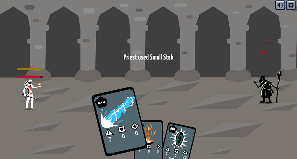

CULTH`s Bane
CULTH's Bane was inspired by "Slay the Spire", in which the player has to fight his way through randomly generated rooms. The difference is that the player can only play one card per turn. At the end of the turn, his whole hand is discarded. As we only had 2 days, we didn't manage to finish the game, so it's buggy. The game was developed in Unity.